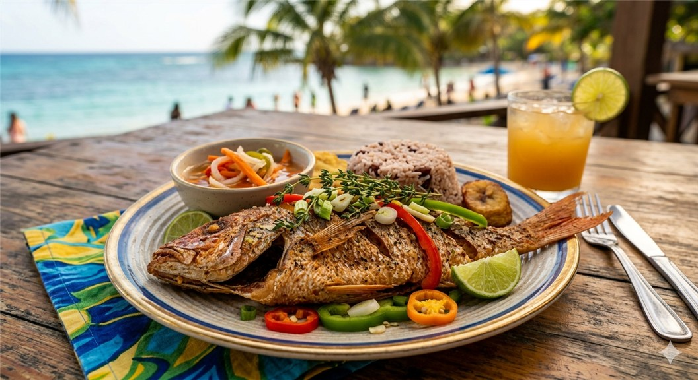

Island-Style Escovitch Fish
This Island-Style Crispy Escovitch Fish is a classic Caribbean staple, and perfect for our Collection of Favorite Recipes. It features red snapper fried to a golden crunch and topped with a zesty, colorful medley of pickled vegetables.

Photo: Google AI
Traditions & Serving Suggestions
While it is eaten year-round at seaside restaurants, Escovitch fish holds deep cultural significance as a traditional meal for Good Friday. It is traditionally enjoyed with:
- Bammy: A dense, fried cassava flatbread that perfectly soaks up the tangy vinegar sauce.
- Festival: Sweet, fried dough dumplings that provide a delicious contrast to the spicy, acidic fish.
- Rice and Peas: A hearty staple that helps balance the heat from the Scotch bonnet peppers.
Origins & History
Escovitch fish is a beloved Jamaican classic with a rich history that dates back to the 16th century. The term is a local adaptation of the Spanish word escabeche, a technique for preserving fried meat or fish in an acidic marinade introduced to the island by Spanish and Portuguese Jews. Long before modern refrigeration, this pickling method was essential for keeping food fresh in the Caribbean heat. Over generations, Jamaica transformed this European method into a signature island dish by infusing it with bold, local ingredients like fiery Scotch bonnet peppers and aromatic pimento (allspice).
- Prep Time
- (includes cleaning the fish and slicing the vegetables)
- Cook Time
- Total time
- (plus for flavors to soak)
- Yield
- 4 servings
Ingredients
The Fish
- 2 lbs
- Whole Red Snapper (cleaned, scaled, and scored)
- 2 tsp
- Salt
- 1 tsp
- Black pepper
- 1 tbsp
- Garlic powder
- 1 cup
- Vegetable oil (for shallow frying)
- 2 slices
- Fresh lime (for cleaning the fish)
The Escovitch Sauce (Pickled Topping)
- 1 large
- Red onion (thinly sliced into rings)
- 1 large
- Carrot (julienned or thinly sliced)
- 1/2 med
- Chayote or "Cho-cho" (julienned)
- 1-2 med
- Scotch Bonnet peppers (seeded and sliced into strips)
- 1/2 cup
- White vinegar
- 1 tsp
- Pimento seeds (allspice berries)
- 1 tsp
- Granulated sugar
- 1/2 tsp
- Salt
Instructions
- Prep the Fish: Rub the fish with lime juice and rinse with cold water. Pat completely dry. Season inside and out with salt, black pepper, and garlic powder.
- Fry until Golden: Heat oil in a large skillet over medium-high heat. Fry the fish for about 5–7 minutes per side until the skin is crispy and the meat is opaque. Remove and drain on paper towels.
- Prepare the Sauce: In a separate small pan, bring vinegar, pimento seeds, sugar, and salt to a simmer.
- Sauté Vegetables: Add the onions, carrots, chayote, and scotch bonnet peppers to the vinegar. Sauté for 2–3 minutes—the vegetables should remain slightly crunchy.
- Assemble: Arrange the fried fish on a platter and pour the hot vinegar and vegetable mixture over the top. Let it sit for at least 15 minutes before serving to allow the flavors to penetrate the fish.